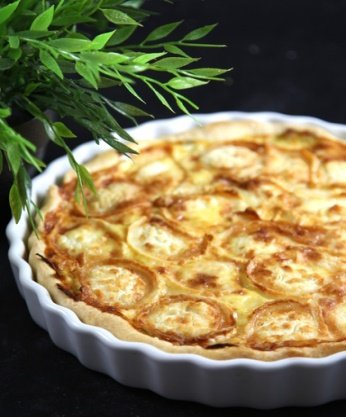

Tarte courgettes chèvre pignons
Ingredients
×
- 1 oignon
- 2 courgettes
- huile d'olive
- sel
- poivre
- 2 oeufs
- un peu de lait
- basilic
- 1 bûche de chèvre
- 50 g de pignons
- 1 pâte brisée

Préparation
Étape 1
Émincer 1 oignon et couper 2 courgettes en fines rondelles. Les cuire jusqu’à tendreté dans un peu d’huile d'olive, avec du sel et du poivre.
Étape 2
Battre 2 oeufs avec un peu de lait pour obtenir une préparation un peu liquide. Ajouter du basilic.
Étape 3
Ajouter 1 bûche de chèvre en dés, 50 g de pignons et les légumes. Mélanger délicatement.
Étape 4
Répartir sur 1 pâte brisée et cuire 45min à 180ºC.